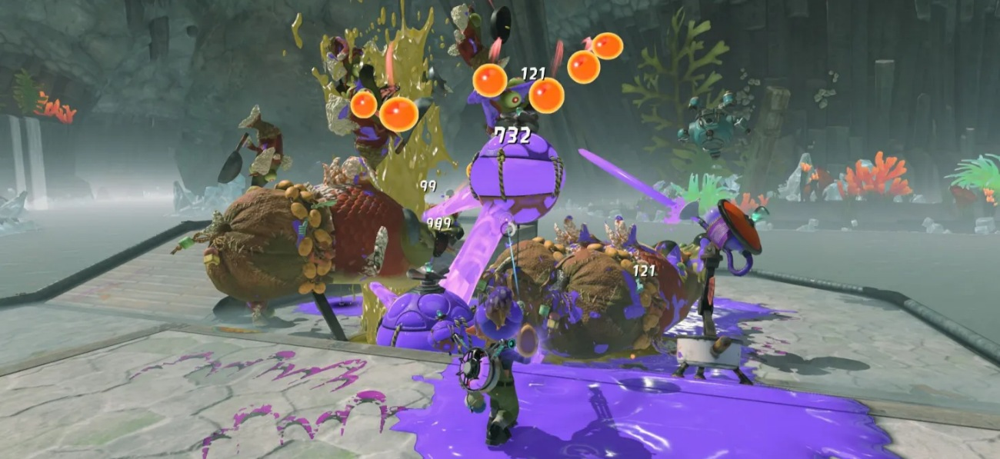
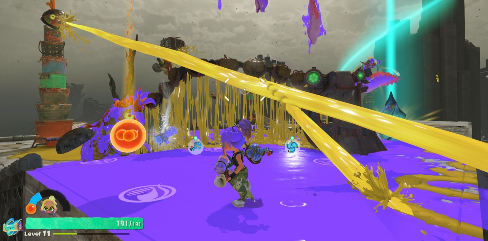
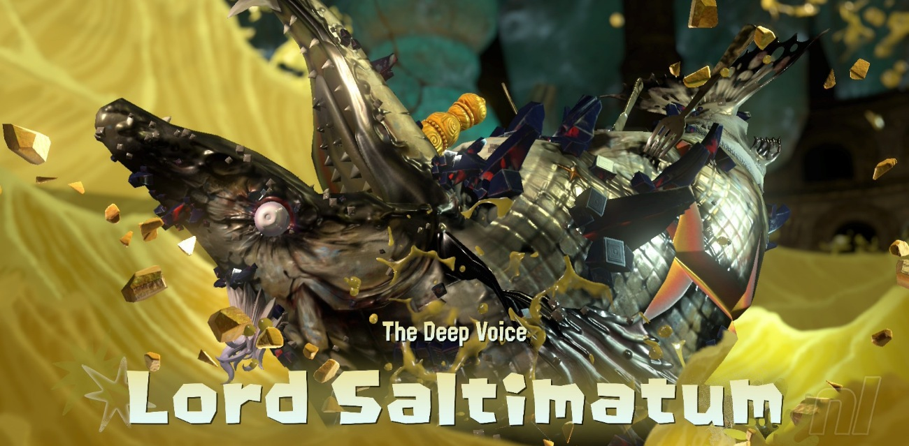
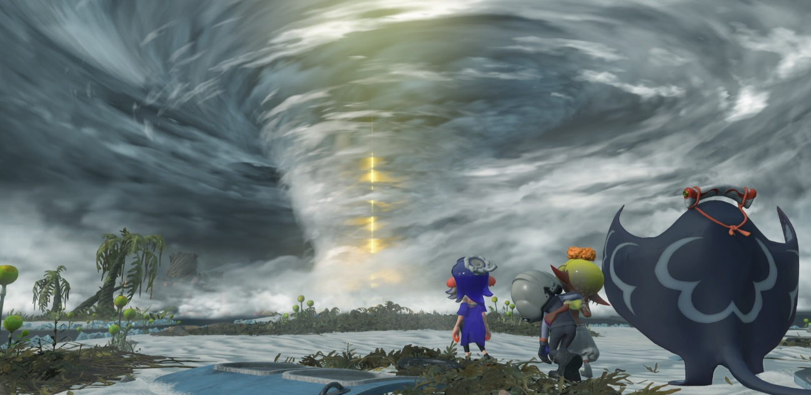

Nunca había jugado un Splatoon pese a que siempre me ha llamado la atención. Creo que me mostraba un poco reacio por el hecho de que gran parte de la gracia de los tres primeros Splatoon era el competitivo en línea, y sinceramente no me apetecía empezar a jugar partidas de PvP, jugador contra jugador, en línea para estampar el mando contra la pantalla.
Un Splatoon para jugar a mi ritmo
Esto era así hasta que un día y de forma totalmente inesperada, los de Nintendo anunciaron (a través de su app Nintendo Today!) un nuevo Splatoon para Switch 2, con la salvedad de que este iba a ser por primera vez un spin-off centrado completamente en el PvE, los combates contra enemigos controlados por el juego. Un querido amigo se lo compró primero y no paraba de predicar las virtudes del juego, así que fue otra razón de peso por la que me animara a comprarlo, eso y también que estaba en Japón donde los juegos de Switch están a la mitad de precio que en España. Así que para allá que fuimos.

Tinta, tesoros y el Clan Surimi
En Splatoon Raiders, encarnarás a un mecanista que, tras quedar varado en las misteriosas islas Espiralita, une fuerzas con el Clan Surimi compuesto por las inigualables Megan, Angie y Rayan, para encontrar la forma de regresar a casa. La aventura combina exploración, combates contra hordas de salmónidos y búsqueda de tesoros, mientras el grupo recorre distintos rincones del archipiélago y descubre poco a poco los secretos que esconden sus islas.
Este Splatoon tiene la misma base que los anteriores, un shooter en tercera persona donde vas disparando tinta con las armas. De hecho, los enemigos conocidos como los salmónidos, según me contó una amiga, ya tuvieron su primera aparición en Splatoon 2 a través del modo cooperativo conocido como Salmon Run. Ahora bien, Splatoon Raiders introduce por primera vez mecánicas puras de RPG de acción y de looter-shooter. Además, contarás con una base que funciona como centro de operaciones y que podrás ir mejorando y ampliando a medida que avances, desbloqueando nuevas posibilidades y mejoras para tu equipamiento. Esta progresión hace que no solo importe superar combates y explorar, sino también ir fortaleciendo poco a poco a tu personaje y preparándote mejor para lo que viene.
Un arsenal con el que trastear
Los de Nintendo han decidido adoptar por completo la fórmula de juegos como Destiny o Borderlands. Mientras haces las misiones, los enemigos te soltarán armas y artefactos de distintas rarezas, niveles y estadísticas que servirán para mejorar y personalizar el equipamiento de tu personaje. Tienes un arsenal abrumador con el que trastear y encontrar el arma que se adapte mejor a tu estilo de juego. Muchas de estas armas han aparecido en anteriores entregas y resultarán familiares para el más veterano, como los lanzatintas, rodillos, brochas, derramatics, etc. Aparte de esto, el juego cuenta con tres clases (veloz, tanque o táctico) con unas habilidades exclusivas para cada una de ellas, como torretas automáticas, dashes, saltos bomba, etc. También contaremos con una habilidad definitiva asociada a uno de los tres personajes del Clan Surimi.

Subir de nivel y renovar la build
El progreso del juego está fundamentalmente en hacer más cheto a tu personaje a través de la subida de niveles. Conforme más enemigos mates, más experiencia conseguirás y más niveles conseguirás. La subida de nivel lleva consigo un incremento de los stats base del personaje y la posibilidad de asignar un punto de mejora a vida, daño o espacio para artilugios. Ahora bien, como en todo ARPG o looter-shooter los enemigos también irán escalando de nivel conforme vayas avanzando, por lo que las cosas se irán complicando si no consigues mejor equipamiento. De este modo, el juego te “fuerza” a ir cambiando constantemente tu build ya que al subir nivel también conseguirás armas mejores con mejores stats, lo que hará que te inclines de forma natural a actualizar tu loadout.
El juego es divertido de jugar, con una historia que es un poco la “excusa” para dar pie a la jugabilidad que al final es la parte nuclear del juego. Hay una grandísima variedad de enemigos, con una cantidad razonable de mini-bosses y bosses que te exigirán emplearte a fondo. También me ha sorprendido la alta densidad de enemigos que pueden llegar a aparecer en un nivel sin que la consola pegue ni un solo drop de frames. Ahí se nota que los de Nintendo saben mejor que nadie cómo sacar músculo de su consola.

El precio del final secreto
Una cosa que no me ha gustado mucho es la locura que hay que grindear y jugar para conseguir el “true ending”. No quiero revelar mucho, pero me parece aburrido y necesitas echar una barbaridad de horas adicionales para alcanzar este final secreto. Entiendo que está pensado para el perfil más hardcore de jugador, el que se quiere reventar jugando y exprimir las mecánicas hasta la última gota, pero me parece excesivo para alguien que simplemente quiere ver cómo termina el juego.

En conclusión, ha sido una magnífica primera toma de contacto con la saga. Jugar a este Splatoon Raiders me ha permitido enamorarme de la jugabilidad que caracteriza a los Splatoon, además de conocer a algunos de sus personajes más entrañables como Angie, Megan y Rayan. Espero con ansias ver hacia dónde se dirigirá esta franquicia en el futuro, ojalá sea con otro single-player del estilo. Si nunca has jugado a un Splatoon, este creo que es una buena puerta de entrada.
Lo mejor
- La jugabilidad con tinta funciona de maravilla en una aventura centrada en el PvE.
- El arsenal y la progresión invitan a experimentar con el equipamiento.
- La variedad y densidad de enemigos, con un rendimiento muy sólido.
Lo peor
- El final secreto exige demasiadas horas adicionales de repetición.
- La historia funciona principalmente como excusa para la acción.
Desglose de puntuación
Veredicto
Una magnífica primera toma de contacto con Splatoon. El combate con tinta, el arsenal y la progresión sostienen una aventura muy divertida, aunque el camino hasta el final secreto resulta demasiado largo y repetitivo.